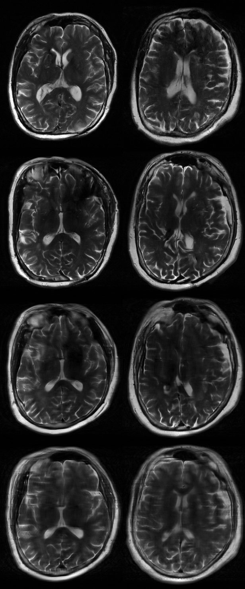

INFERENCE WALKTHROUGH / PRIOR SAMPLING ONLY
先验能画，
后验重建没做。
只跑官方仓库的 prior.py：干净 EDM（R=1）8 张、Ambient R=2 8 张、R=4 16 张、R=8 8 张，384 分辨率、EDM 默认 18 步、batch=2。四档的视觉退化顺序与论文 Fig. 1 一致：R 越大越软，但中线与脑室始终正确。因为拿不到 fastMRI 预处理包，灵敏度图用合成的 4 线圈鸟笼图替代；后验重建（solve_inverse_adps.py）需要真值复数图、16 线圈 k-space 与掩膜，本次未跑。没有 FID。
跑了什么
论文的核心是「用欠采样数据训先验 + 用它做后验采样」，两头分别对应仓库的 prior.py 与 solve_inverse_adps.py。本次只跑前者：验证 4 个训练水平的模型能否生成结构合理的脑 MRI，并对照论文 Fig. 1 的退化趋势。后验部分需要 fastMRI 预处理包 ksp_brainMRI_384.zip（含真值、16 线圈 k-space、灵敏度图、各加速率掩膜），且仓库没有生成 sample_%d.pt 的脚本，超出本次流量与范围。
采样超参全部是代码默认值：num_steps=18、sigma_min=0.002、sigma_max=80、rho=7、S_churn=0、num_masks=1、guidance_scale=0，与 README 的 prior.sh 相同；只把 batch 从 16 降到 2（24 GB 卡上 batch=16 OOM）。
环境与改动
Python 3.9 + torch 2.0.0+cu118 + torchvision 0.15.1 + numpy 1.26.4 + scipy/matplotlib/click/pillow/tqdm/s3fs/wandb + sigpy。三个坑：sigpy 不在 environment.yml 里但 torch_utils/ambient_diffusion.py 与 training/dataset.py 都 import 它，必须补装；dnnlib/util.py 顶层 import s3fs、torch_utils/misc.py 顶层 import wandb，也要装（不需要账号）；numpy 2.x 会让 torch 2.0 报 _ARRAY_API not found，锁到 1.26.4。clone 时 LFS smudge 失败（机器无 git-lfs），用 -c filter.lfs.smudge=cat ... 跳过，只影响 empty_embeds.pt（文本到图像脚本才用）。
算法代码零改动。prior.py 一行没动，新增的只有封装脚本 code/run_prior.sh 与合成 maps 脚本 code/make_synth_maps.py。权重是 README 的 box 链接（ambient_models.zip，1.63 GiB，解压 3.5 GB）：ambient R={2,4,6,8} 各 147 MB、edm supervised R=1 与 l1_recon R={2,4,6,8} 各 262 MB。
灵敏度图替代（唯一的数据侧改动）：prior.py 无条件读 maps_path 的 zip，而仓库不含生成脚本。本次用 birdcage 状平滑复数灵敏度（32 个条目，逐点归一 Σ_c|m_c|²=1）合成。对先验采样影响很小——归一化后 adjoint∘forward ≈ ifft(mask·fft(x))，几乎只等于 k-space 掩膜投影；但后验实验必须换回真值 maps。
结果
| 模型 | 样本数 | batch | 每批耗时 | 显存峰值 | 平均梯度幅值（锐度代理） |
|---|---|---|---|---|---|
| 干净 EDM，R=1 | 8 | 2 | 5.66 s | ~11 GB | 11.97 |
| Ambient R=2 | 8 | 2 | 8.4 s | ~15 GB | 13.01（含条带，不代表更好） |
| Ambient R=4 | 16 | 2 | 8.6 s（复测） | ~15 GB（复测） | 11.29 |
| Ambient R=8 | 8 | 2 | 8.4 s | ~15 GB | 10.26 |
输出在 out/prior_R{1,2,4,8}/('network-snapshot.pkl',)<seed>.png（脚本用 matplotlib 存绝对值图并 flipud，含渲染边距，故 PNG 约 308×369）。没有 FID：fid.py ref 需要 fastMRI 参考集；表中的「平均梯度幅值」只是锐度代理，同时包含噪声/条带，不能当质量排序。
R=4 首轮比 R=2/R=8 慢一倍、显存高 8 GB，复测（空卡单独跑）为 8.57 s/批、15.1 GB，与另两档一致——首轮差异是 GPU1 上有别人的进程、整机功耗墙导致降频，不是模型差异。batch=1 峰值 8.2 GB / 4.26 s，batch=16 在 24 GB 卡上 OOM（22.9 GiB 已分配）。
小样本推理走查，不等同论文指标；且只覆盖先验，不覆盖后验重建。
样例

没跑的部分与局限
- 只做先验，没做后验：这是本次最重要的边界。论文的核心结论（A-DPS 在高加速率下超过 FS-DPS）完全没有验证。
- maps 是合成的：先验采样对 maps 不敏感，但任何后验/重建结论都不能建立在这套合成 maps 上。
- 没有 FID 与参考分布：只有锐度代理，不能与 Table 1 的 FID 对照。
- 上游循环 bug：
prior.py是while True+eval_index恒为 0，生成完一个 checkpoint 会无限重复生成并覆盖同名 PNG，与 README「生成 1000 张就结束」不符；本次拿到目标张数后手动停进程。 - 未跑的分支：后验 A-DPS/A-OS、腹部 MRI（无真值场景）、自然图像（AFHQ/FFHQ/CelebA）、MoDL/SSDU 等对照。
文件位置
| 路径 | 内容 |
|---|---|
/data1/kxchen/infer-repro/adps/code/src | 官方仓库 @ 75feb2f（submodule @6e21301，未使用） |
.../adps/code/make_synth_maps.py | 合成 4 线圈灵敏度图（因无 fastMRI 数据） |
.../adps/data/maps_synth.zip | 32 × (4,384,320) complex64，Σ|m|²=1 |
.../adps/ckpt/ | 9 个模型（ambient R=2/4/6/8、edm supervised_R=1、l1_recon R=2/4/6/8） |
.../adps/out/prior_R{1,2,4,8}/ | 先验样本 PNG 与对比拼图 |
.../adps/RECORD.md | 实验记录与数字出处 |
来源
- 论文（arXiv:2403.08728）与官方仓库。
- 权重：README 的 box 链接
ambient_models.zip；训练数据来自 fastMRI 预处理包（本次未下载）。 - 本页数字来自服务器脚本自算的耗时/显存与锐度代理，样例图为
out/prior_montage_R1_R2_R4_R8.png的 JPEG 缩放版。